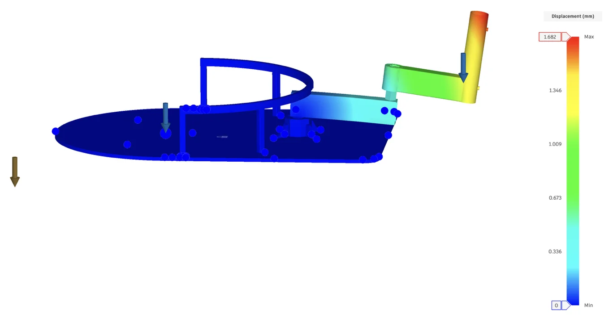
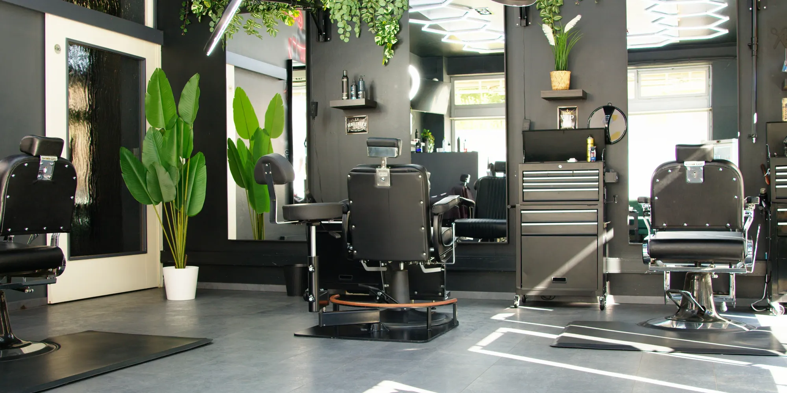
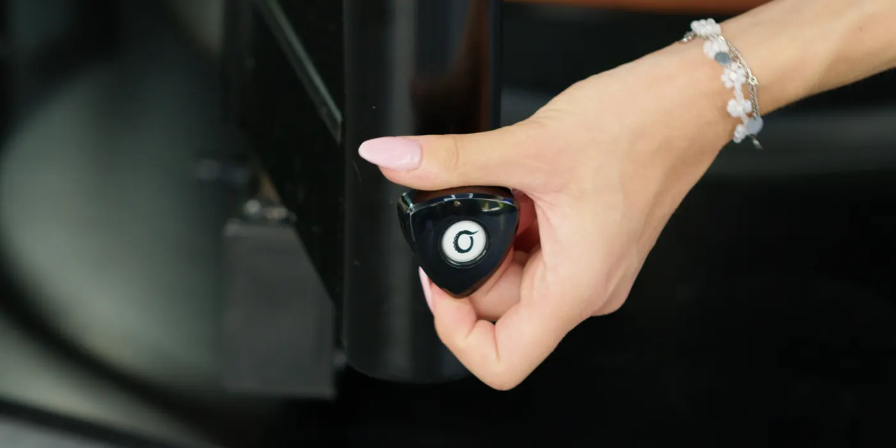
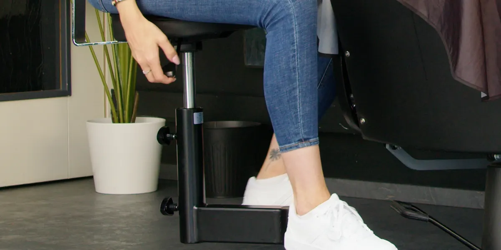
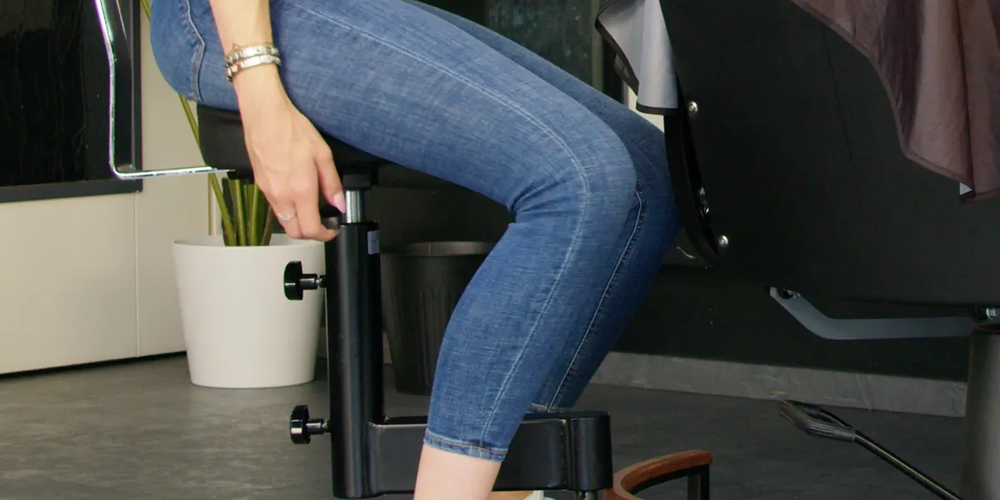

Eigenes Produkt · Für Barbershops
„Bewegen wie im Stehen. Sitzen wie im Sessel.“
Was er ist
Der OctoStool ist ein Barbierhocker auf einem Schwenkarm, montiert am Fuß des Barbierstuhls. Der Barbier bleibt sitzend gestützt und bewegt sich frei um den Kunden, ohne stundenlang zu stehen oder einen losen Hocker über den Boden zu schieben.
Von der Idee zum Produkt
Am OctoStool zeigen wir, was unsere Kette hervorbringt. Dieselben Schritte gibt es für Ihr Produkt.

Ausführungen & technische Daten


| Sitz | Ergo+ErgoClassic+Classic |
|---|---|
| Leder | SchwarzGrauWeißIndividuell |
| Rahmen | SchwarzWunschfarbe |
| Arm | MahagoniEichePulverbeschichteter Stahl |
Galerie




Wählen Sie Essential oder Power+, Ihre Ausführung und die Stückzahl. Wir senden Ihnen ein schriftliches Angebot.
Alle Ausführungen und Daten auf zwei Seiten. Für größere Bestellungen oder eine individuelle Ausführung melden Sie sich bei uns.
Den OctoStool haben wir selbst gestaltet, konstruiert und gebaut. Dasselbe können wir für Ihre Idee tun.